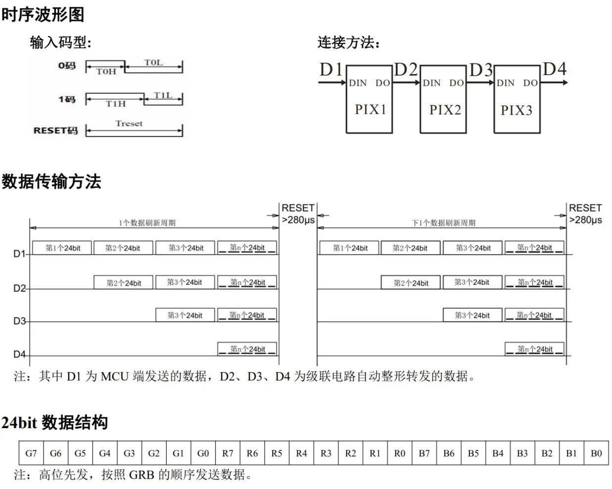
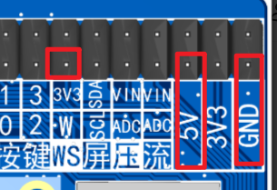
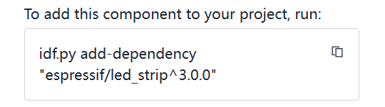

<!DOCTYPE lake>
<p data-lake-id="u8dc5326a" id="u8dc5326a"><span data-lake-id="ua2902325" id="ua2902325"> WS2812B-2020是一个集控制电路与发光电路于一体的智能外控LED光源；每个元件即为一个像素点；像素点内部包含了智能数字接口数据锁存信号整形放大驱动电路，还包含有高精度的内部振荡器和可编程定电流控制部分，有效保证了像素点光的颜色高度一致。 <br/><br/>数据协议采用单线归零码的通讯方式，像素点在上电复位以后，DIN端接受从控制器传输过来的数据，首先送过来的24bit数据被第一个像素点提取后，送到像素点内部的数据锁存器，剩余的数据经过内部整形处理电路整形放大后通过DO端口开始转发输出给下一个级联的像素点，每经过一个像素点的传输，信号减少24bit；像素点采用自动整形转发技术，使得该像素点的级联个数不受信号传送的限制，仅受限信号传输速度要求；高达2KHz的端口扫描频率，在高清摄像头的捕捉下都不会出现闪烁现象，非常适合高速移动产品的使用；280μs以上的RESET时间，出现中断也不会引起误复位，可以支持更低频率、价格便宜的MCU；LED具有低电压驱动、环保节能、亮度高、散射角度大、一致性好超、低功率及超长寿命等优点。将控制电路集成于LED上面，电路变得更加简单，体积小，安装更加简便。 <br/><br/></span></p><p data-lake-id="u3a724a5a" id="u3a724a5a"></p><p data-lake-id="u3f96492f" id="u3f96492f"><span data-lake-id="u085a540b" id="u085a540b"><br/><br/></span></p><h2 data-lake-id="ws7kW" id="ws7kW"><span data-lake-id="u646d4899" id="u646d4899">示例代码</span></h2><p data-lake-id="uec0635a9" id="uec0635a9"><span data-lake-id="uf0907294" id="uf0907294">参考文档：</span><a data-lake-id="u6b62f646" href="https://github.com/espressif/idf-extra-components/tree/master/led_strip/examples/led_strip_rmt_ws2812" id="u6b62f646" rel="noopener noreferrer" target="_blank"><span data-lake-id="u318ce2f8" id="u318ce2f8">https://github.com/espressif/idf-extra-components/tree/master/led_strip/examples/led_strip_rmt_ws2812</span></a></p><p data-lake-id="u939d79db" id="u939d79db"></p><p data-lake-id="u4d7a0235" id="u4d7a0235"><span data-lake-id="u90db3f44" id="u90db3f44">参考文档：</span><a class="yuque-card-link" href="https://components.espressif.com/components/espressif/led_strip/versions/3.0.0" rel="noopener noreferrer" target="_blank">bookmarkInline：bookmarkInline</a></p><p data-lake-id="u2275cc39" id="u2275cc39"><br/></p><h3 data-lake-id="xlsET" id="xlsET"><span data-lake-id="u3b947080" id="u3b947080">添加依赖</span></h3><ol list="ua49c5347"><li data-lake-id="u9d11531e" fid="u4f3d14b5" id="u9d11531e"><span data-lake-id="ud0a98bc1" id="ud0a98bc1">打开idf命令行窗口：</span></li></ol><p data-lake-id="uf8c53d25" id="uf8c53d25"></p><ol list="uf5bf59e1" start="2"><li data-lake-id="u91e7592f" fid="uc06d8982" id="u91e7592f"><span data-lake-id="u04d104c8" id="u04d104c8">添加依赖：</span></li></ol><p data-lake-id="ue7221dc8" id="ue7221dc8"></p><span class="yuque-card-unsupported">[codeblock]</span><h2 data-lake-id="Kvno8" id="Kvno8"><br/></h2><p data-lake-id="uf846fe3f" id="uf846fe3f"><br/></p><h3 data-lake-id="XiTlR" id="XiTlR"><span data-lake-id="u28d7d4f5" id="u28d7d4f5">导入头文件</span></h3><span class="yuque-card-unsupported">[codeblock]</span><h3 data-lake-id="yi6cf" id="yi6cf"><span data-lake-id="u108526f3" id="u108526f3">声明常亮</span></h3><span class="yuque-card-unsupported">[codeblock]</span><h3 data-lake-id="oC1Ky" id="oC1Ky"><span data-lake-id="udd446a3c" id="udd446a3c">定义颜色值</span></h3><span class="yuque-card-unsupported">[codeblock]</span><h3 data-lake-id="ggcAc" id="ggcAc"><span data-lake-id="u1b01be3a" id="u1b01be3a">配置ws2812</span></h3><span class="yuque-card-unsupported">[codeblock]</span><h3 data-lake-id="RmR2E" id="RmR2E"><span data-lake-id="u30458e4e" id="u30458e4e">编写测试函数</span></h3><span class="yuque-card-unsupported">[codeblock]</span>